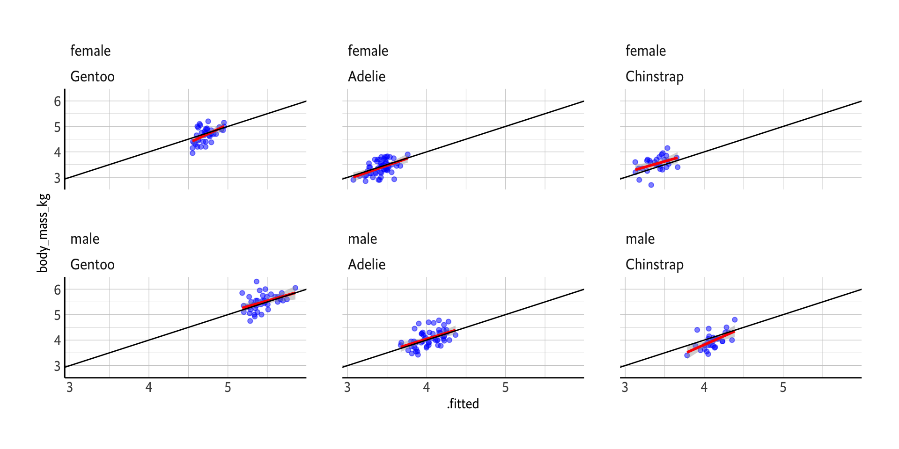

Linear Regression Application
CE 475
2023-10-25
Packages
First things first: we need to load the necessary libraries
The Data
The data contains size measurements for three penguin species that lives on three islands.
The Data
The data contains size measurements for three penguin species that lives on three islands.
# A tibble: 344 × 8
species island bill_length_mm bill_depth_mm flipper_length_mm body_mass_g
<fct> <fct> <dbl> <dbl> <int> <int>
1 Adelie Torgersen 39.1 18.7 181 3750
2 Adelie Torgersen 39.5 17.4 186 3800
3 Adelie Torgersen 40.3 18 195 3250
4 Adelie Torgersen NA NA NA NA
5 Adelie Torgersen 36.7 19.3 193 3450
6 Adelie Torgersen 39.3 20.6 190 3650
7 Adelie Torgersen 38.9 17.8 181 3625
8 Adelie Torgersen 39.2 19.6 195 4675
9 Adelie Torgersen 34.1 18.1 193 3475
10 Adelie Torgersen 42 20.2 190 4250
sex year
<fct> <int>
1 male 2007
2 female 2007
3 female 2007
4 <NA> 2007
5 female 2007
6 male 2007
7 female 2007
8 male 2007
9 <NA> 2007
10 <NA> 2007
# ℹ 334 more rows
The Data
Distribution of the varaibles
species island bill_length_mm bill_depth_mm
Adelie :152 Biscoe :168 Min. :32.10 Min. :13.10
Chinstrap: 68 Dream :124 1st Qu.:39.23 1st Qu.:15.60
Gentoo :124 Torgersen: 52 Median :44.45 Median :17.30
Mean :43.92 Mean :17.15
3rd Qu.:48.50 3rd Qu.:18.70
Max. :59.60 Max. :21.50
NA's :2 NA's :2
flipper_length_mm body_mass_g sex year
Min. :172.0 Min. :2700 female:165 Min. :2007
1st Qu.:190.0 1st Qu.:3550 male :168 1st Qu.:2007
Median :197.0 Median :4050 NA's : 11 Median :2008
Mean :200.9 Mean :4202 Mean :2008
3rd Qu.:213.0 3rd Qu.:4750 3rd Qu.:2009
Max. :231.0 Max. :6300 Max. :2009
NA's :2 NA's :2 Initial Exploratory Plot
The Data
Lets check out the distribution of penguins closer
# A tibble: 5 × 3
species island n
<fct> <fct> <int>
1 Gentoo Biscoe 119
2 Chinstrap Dream 68
3 Adelie Dream 55
4 Adelie Torgersen 47
5 Adelie Biscoe 44Since Adelie is the only one that lives on 3 of the islands. Should we really use island?
We’ll come to that later on
Data Cleaning
- removing NA values
- transforming
body_mass_gtobody_mass_kg - assigning results to a new data frame
# A tibble: 333 × 8
species island bill_length_mm bill_depth_mm flipper_length_mm sex year
<fct> <fct> <dbl> <dbl> <int> <fct> <int>
1 Adelie Torgersen 39.1 18.7 181 male 2007
2 Adelie Torgersen 39.5 17.4 186 female 2007
3 Adelie Torgersen 40.3 18 195 female 2007
4 Adelie Torgersen 36.7 19.3 193 female 2007
5 Adelie Torgersen 39.3 20.6 190 male 2007
6 Adelie Torgersen 38.9 17.8 181 female 2007
7 Adelie Torgersen 39.2 19.6 195 male 2007
8 Adelie Torgersen 41.1 17.6 182 female 2007
9 Adelie Torgersen 38.6 21.2 191 male 2007
10 Adelie Torgersen 34.6 21.1 198 male 2007
body_mass_kg
<dbl>
1 3.75
2 3.8
3 3.25
4 3.45
5 3.65
6 3.62
7 4.68
8 3.2
9 3.8
10 4.4
# ℹ 323 more rowsSplitting the Data
Initial split:
<Training/Testing/Total>
<249/84/333>Extract the training and the test data:
# A tibble: 249 × 8
species island bill_length_mm bill_depth_mm flipper_length_mm sex
<fct> <fct> <dbl> <dbl> <int> <fct>
1 Adelie Biscoe 41.1 18.2 192 male
2 Adelie Torgersen 34.6 21.1 198 male
3 Gentoo Biscoe 53.4 15.8 219 male
4 Adelie Biscoe 42.7 18.3 196 male
5 Chinstrap Dream 49.8 17.3 198 female
6 Gentoo Biscoe 45.5 14.5 212 female
7 Adelie Dream 39 18.7 185 male
8 Gentoo Biscoe 43.6 13.9 217 female
9 Adelie Dream 36 17.8 195 female
10 Adelie Torgersen 35.5 17.5 190 female
year body_mass_kg
<int> <dbl>
1 2008 4.05
2 2007 4.4
3 2009 5.5
4 2009 4.08
5 2009 3.68
6 2009 4.75
7 2009 3.65
8 2008 4.9
9 2009 3.45
10 2008 3.7
# ℹ 239 more rows# A tibble: 84 × 8
species island bill_length_mm bill_depth_mm flipper_length_mm sex year
<fct> <fct> <dbl> <dbl> <int> <fct> <int>
1 Adelie Torgersen 40.3 18 195 female 2007
2 Adelie Torgersen 39.3 20.6 190 male 2007
3 Adelie Torgersen 42.5 20.7 197 male 2007
4 Adelie Torgersen 34.4 18.4 184 female 2007
5 Adelie Biscoe 40.5 17.9 187 female 2007
6 Adelie Dream 40.9 18.9 184 male 2007
7 Adelie Dream 38.8 20 190 male 2007
8 Adelie Dream 36.5 18 182 female 2007
9 Adelie Dream 36 18.5 186 female 2007
10 Adelie Dream 39.6 18.8 190 male 2007
body_mass_kg
<dbl>
1 3.25
2 3.65
3 4.5
4 3.32
5 3.2
6 3.9
7 3.95
8 3.15
9 3.1
10 4.6
# ℹ 74 more rowsDefining the model
We want to predict body_mass_kg of penguins.
Lets first check the correlation between numeric variables
bill_length_mm bill_depth_mm flipper_length_mm year
bill_length_mm 1.0000000 -0.16867443 0.6355054 0.02054490
bill_depth_mm -0.1686744 1.00000000 -0.5556389 -0.05960619
flipper_length_mm 0.6355054 -0.55563894 1.0000000 0.17326138
year 0.0205449 -0.05960619 0.1732614 1.00000000
body_mass_kg 0.5750427 -0.43001181 0.8605754 0.02176427
body_mass_kg
bill_length_mm 0.57504266
bill_depth_mm -0.43001181
flipper_length_mm 0.86057543
year 0.02176427
body_mass_kg 1.00000000There seems like a correlation between body_mass_g and all the numeric variables expect year which we cannot consider a numeric variable.
So, we decide not to use year in our model.
Defining the model
Variable selection: mixed method
We now need to decide which variables to use. Lets use a mixed method of forward selection and backward selection
Subset selection object
Call: regsubsets.formula(body_mass_kg ~ ., data = penguins_training,
nvmax = NULL, method = "exhaustive", force.in = NULL, force.out = "year")
9 Variables (and intercept)
Forced in Forced out
speciesAdelie FALSE FALSE
speciesChinstrap FALSE FALSE
islandDream FALSE FALSE
islandTorgersen FALSE FALSE
bill_length_mm FALSE FALSE
bill_depth_mm FALSE FALSE
flipper_length_mm FALSE FALSE
sexmale FALSE FALSE
year FALSE TRUE
1 subsets of each size up to 9
Selection Algorithm: exhaustiveDefining the model
Variable selection: mixed method
We now need to decide which variables to use. Lets use a mixed method of forward selection and backward selection
[1] 0.7395398 0.7927699 0.8346512 0.8561028 0.8647157 0.8679239 0.8675853
[8] 0.8670709 (Intercept) speciesAdelie speciesChinstrap islandDream
TRUE TRUE TRUE FALSE
islandTorgersen bill_length_mm bill_depth_mm flipper_length_mm
FALSE TRUE TRUE TRUE
sexmale year
TRUE FALSE Variable island is not on the best model so we are not going to include it to our model formula as well.
Recipe + Model = Workflow
Now we can define our recipe; which includes model formula and preprocessings
In what model we are going to use the recepie?
Linear Regression Model Specification (regression)
Computational engine: lm Then, our workflow becomes
══ Workflow ════════════════════════════════════════════════════════════════════
Preprocessor: Recipe
Model: linear_reg()
── Preprocessor ────────────────────────────────────────────────────────────────
2 Recipe Steps
• step_dummy()
• step_dummy()
── Model ───────────────────────────────────────────────────────────────────────
Linear Regression Model Specification (regression)
Computational engine: lm Fiting the Model
══ Workflow [trained] ══════════════════════════════════════════════════════════
Preprocessor: Recipe
Model: linear_reg()
── Preprocessor ────────────────────────────────────────────────────────────────
2 Recipe Steps
• step_dummy()
• step_dummy()
── Model ───────────────────────────────────────────────────────────────────────
Call:
stats::lm(formula = ..y ~ ., data = data)
Coefficients:
(Intercept) flipper_length_mm bill_length_mm bill_depth_mm
-0.48514 0.01476 0.02097 0.07828
species_Adelie species_Chinstrap sex_male
-1.02378 -1.30278 0.36468
Call:
stats::lm(formula = ..y ~ ., data = data)
Residuals:
Min 1Q Median 3Q Max
-0.66547 -0.17076 -0.01046 0.17987 0.93694
Coefficients:
Estimate Std. Error t value Pr(>|t|)
(Intercept) -0.485144 0.696529 -0.697 0.486773
flipper_length_mm 0.014759 0.003261 4.525 9.45e-06 ***
bill_length_mm 0.020973 0.007983 2.627 0.009157 **
bill_depth_mm 0.078276 0.021951 3.566 0.000437 ***
species_Adelie -1.023783 0.148582 -6.890 4.79e-11 ***
species_Chinstrap -1.302781 0.123746 -10.528 < 2e-16 ***
sex_male 0.364682 0.054548 6.686 1.58e-10 ***
---
Signif. codes: 0 '***' 0.001 '**' 0.01 '*' 0.05 '.' 0.1 ' ' 1
Residual standard error: 0.2849 on 242 degrees of freedom
Multiple R-squared: 0.8711, Adjusted R-squared: 0.8679
F-statistic: 272.6 on 6 and 242 DF, p-value: < 2.2e-16Fitted vs Actual Values & RMSE
# A tibble: 249 × 3
body_mass_kg .fitted .std.resid
<dbl> <dbl> <dbl>
1 4.05 3.98 0.261
2 4.4 4.16 0.895
3 5.5 5.47 0.112
4 4.08 4.08 -0.00574
5 3.68 3.53 0.506
6 4.75 4.73 0.0597
7 3.65 3.87 -0.774
8 4.9 4.72 0.638
9 3.45 3.52 -0.240
10 3.7 3.41 1.03
# ℹ 239 more rowsFitted vs Actual Values: training data performance
Fitted vs Actual Values: training data performance
Fitted vs Actual Values: training data performance
Fitted vs Actual Values: testing data performance
RMSE and RSQ of testing data fit
# A tibble: 2 × 4
.metric .estimator .estimate .config
<chr> <chr> <dbl> <chr>
1 rmse standard 0.298 Preprocessor1_Model1
2 rsq standard 0.886 Preprocessor1_Model1RMSE and RSQ are very close to training data, which is what we want to achive
What about the predictions and actual values?
# A tibble: 84 × 5
id .pred .row body_mass_kg .config
<chr> <dbl> <int> <dbl> <chr>
1 train/test split 3.62 3 3.25 Preprocessor1_Model1
2 train/test split 4.10 5 3.65 Preprocessor1_Model1
3 train/test split 4.28 13 4.5 Preprocessor1_Model1
4 train/test split 3.37 14 3.32 Preprocessor1_Model1
5 train/test split 3.50 23 3.2 Preprocessor1_Model1
6 train/test split 3.91 29 3.9 Preprocessor1_Model1
7 train/test split 4.04 32 3.95 Preprocessor1_Model1
8 train/test split 3.35 36 3.15 Preprocessor1_Model1
9 train/test split 3.44 38 3.1 Preprocessor1_Model1
10 train/test split 3.96 41 4.6 Preprocessor1_Model1
# ℹ 74 more rows